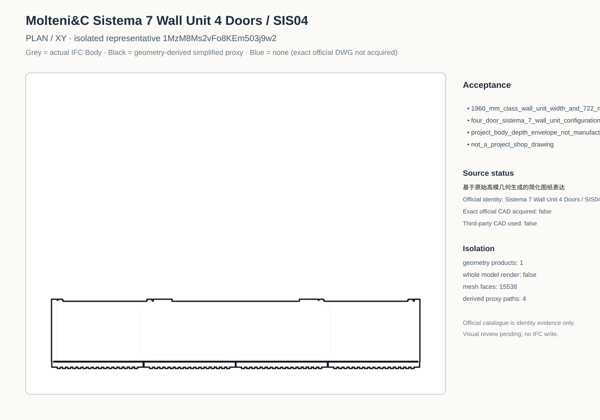
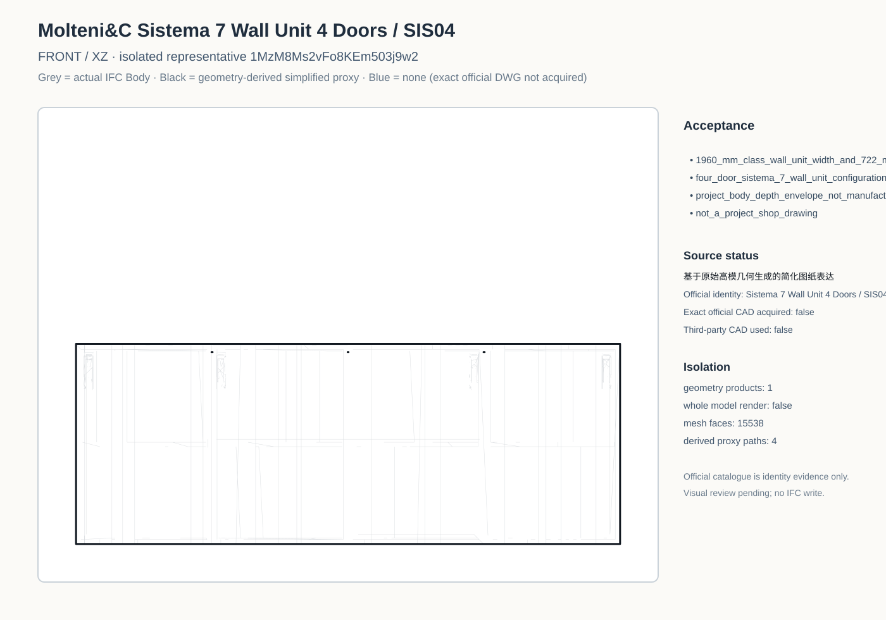
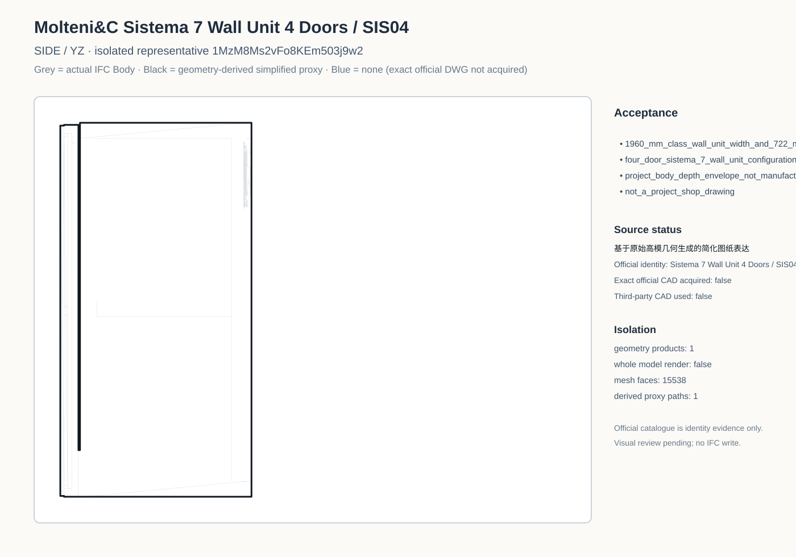

Project Plan

Black line = simplified drawing representation derived from the original high-poly geometry. Official catalogue pages establish identity and the 1960 x 722 x 331 mm standard size class, but exact native Wall Unit CAD was not acquired. The near-name full-height Sistema 7 Doors DWG is explicitly excluded, so no blue line is shown.







7a50b87e8f48a7c2bfbaa9f1dabdfca7155fa684b2325c66aa1ae15c8ab0a25c